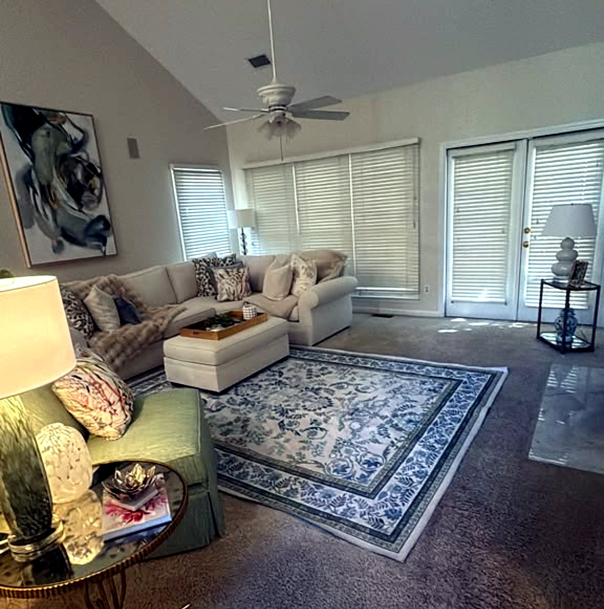
Regular house cleaning
Weekly, biweekly or monthly maid service that keeps your home guest-ready all the time.
See regular house cleaning →Brazilian-style house cleaning and maid service for homes and businesses in Greer, Greenville, Taylors and the Upstate. Baseboards, door frames, behind the toilet: every detail, every visit.
Takes 1 minute. Free in-home estimate. No commitment.
5-star reviews on Google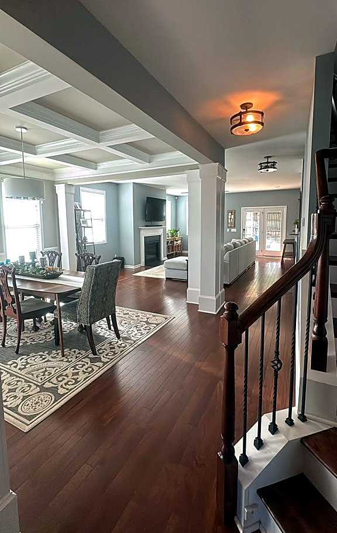
Tell us about your home or business in Greer. Book a free in-home estimate: we visit, see the space and give you an exact price, with no commitment.
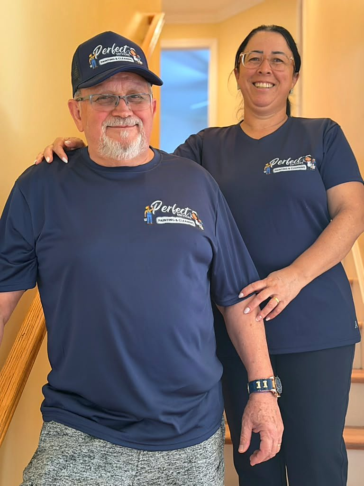
From weekly maid service to a full deep clean, every visit follows the same room-by-room checklist.

Weekly, biweekly or monthly maid service that keeps your home guest-ready all the time.
See regular house cleaning →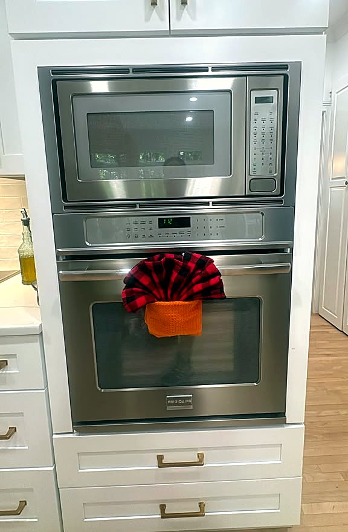
Baseboards, cabinet fronts, grout, appliances and the build-up regular cleanings leave behind.
See deep cleaning →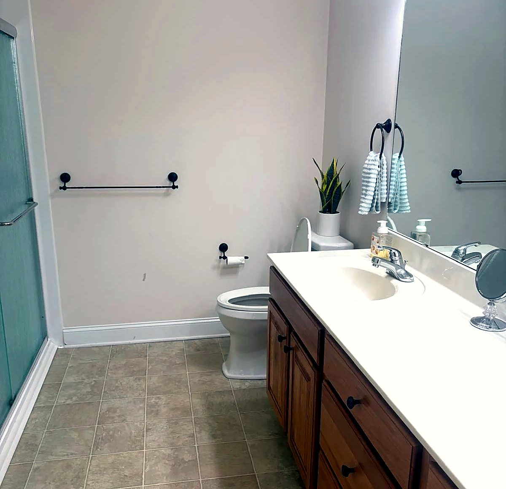
Inside cabinets, closets, fridge and oven, ready for the final walkthrough and your deposit.
See move-in / move-out cleaning →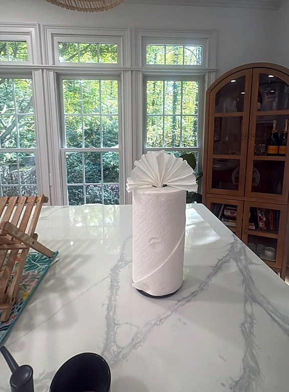
Fine dust and debris removed after a build or remodel, so you can move in right away.
See post-construction cleaning →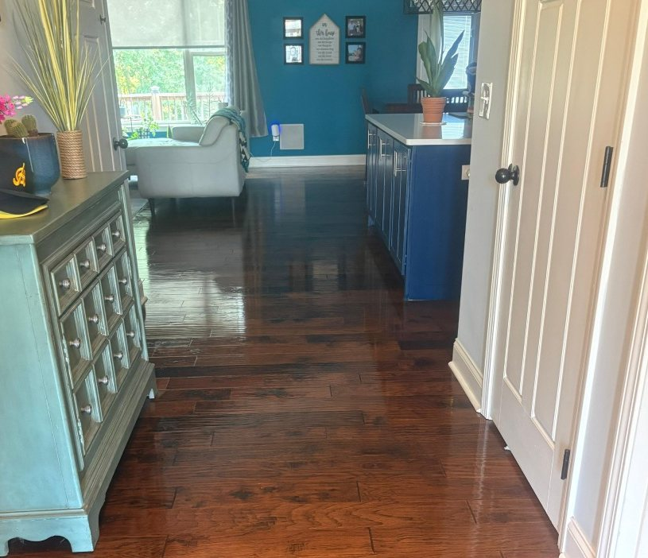
Offices, stores and small businesses in Greer and Greenville, cleaned around your hours.
See commercial and office cleaning →Every home is different, so the exact price comes after a free walkthrough at your home, with no commitment.
Text us a photo Or fill out the formIn Brazil, a clean house means every surface was touched by hand, not just the ones you see. That’s the standard we bring to every home we clean in the Upstate.
Details most cleaning companies skip
No stock photos. These are our clients’ homes, right after our team finished.
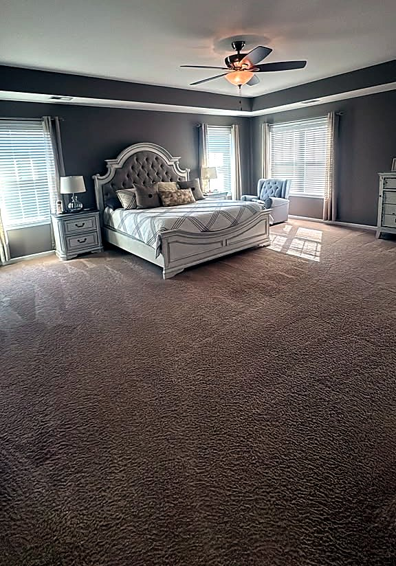
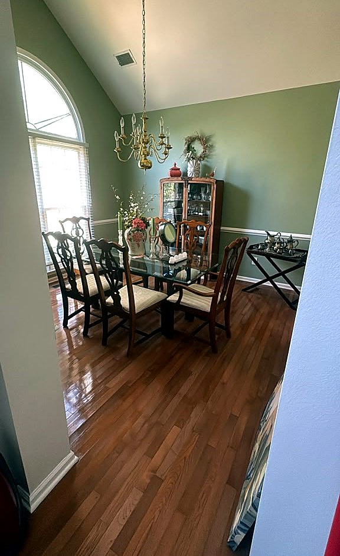
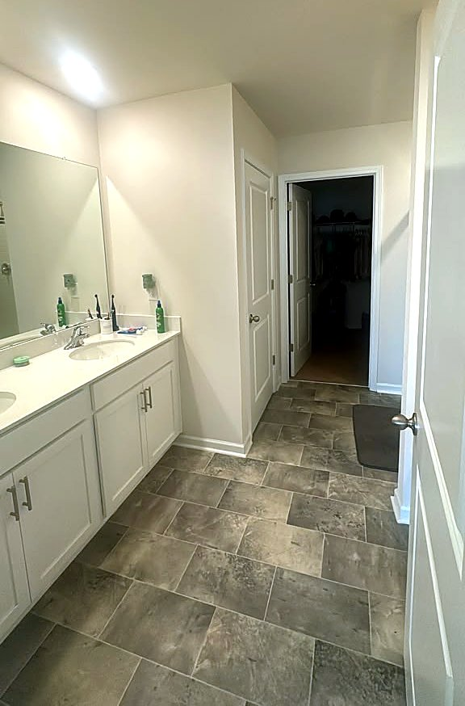
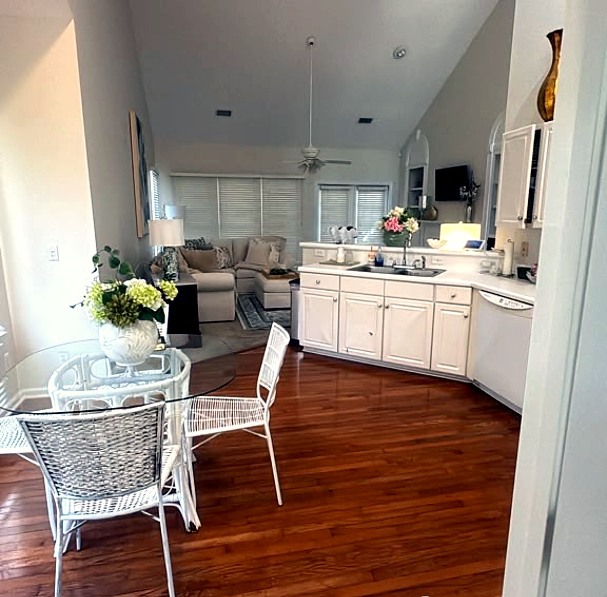
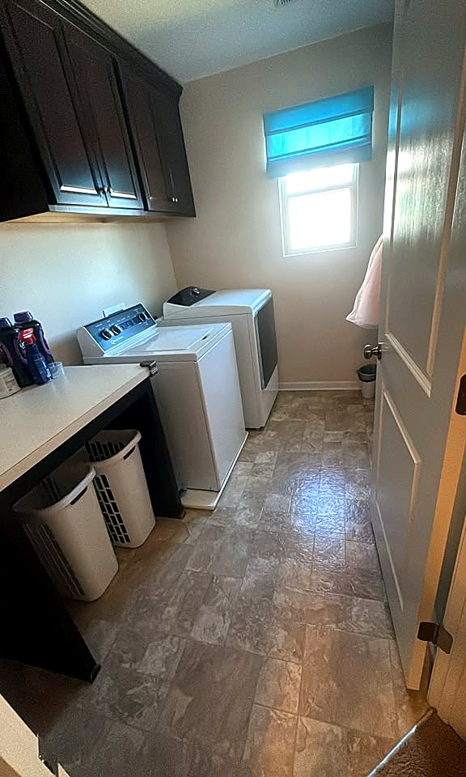
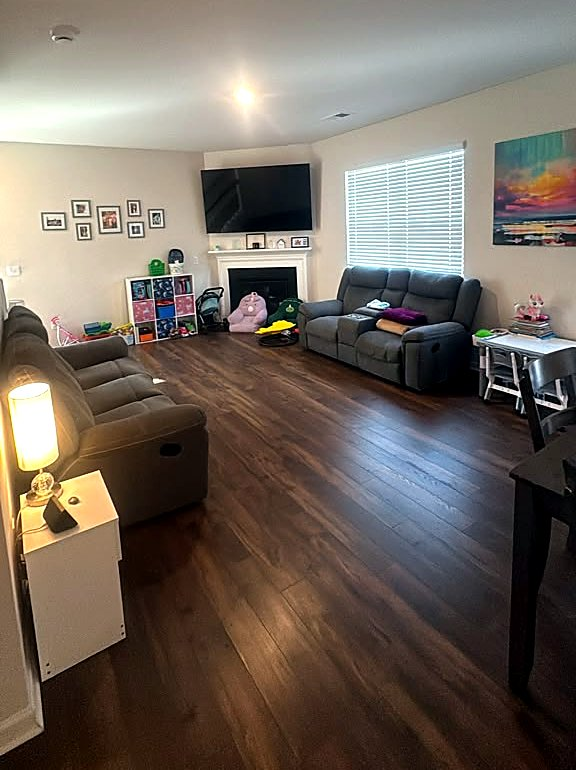
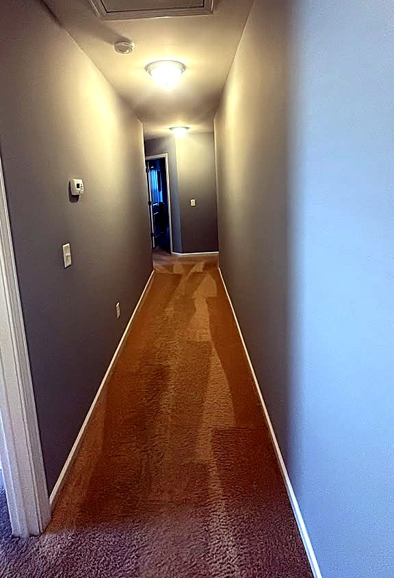
Real clients, real homes. Watch what one of them had to say, or read all our reviews on Google.
Client testimonial, Perfect Services house cleaning
I highly recommend Perfect Services! She has cleaned my house, and I absolutely loved her work. She does an amazing job, pays attention to every little detail, and truly cares about making everything look perfect. I love her cleaning style and how thorough she is. My house always felt so clean, fresh, and organized after she finished. If you’re looking for someone reliable who takes pride in her work and goes the extra mile, I definitely recommend Perfect Services!
I highly recommend Regiane’s work. She is an excellent professional, very dedicated and meticulous. She performs her cleaning tasks with great care and attention to detail. Congratulations on a job well done!
Regiani is an exceptional cleaner. Reliable, consistent, and always does a fantastic job. Highly recommend her!
Fill out the form, call or text. Schedule a free estimate visit and you get an exact price after we see the home, with no commitment.
We visit, see the space and give you an exact price, then book a date that fits your schedule.
Our team follows the full checklist, room by room. You just walk in and enjoy it.
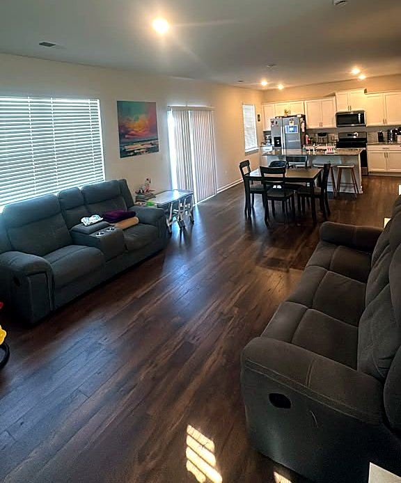
PricingWhat affects house cleaning prices in Greer, SC: home size, bedrooms and bathrooms, deep vs. regular cleaning, frequency and condition. Get a free estimate from Perfect Services.
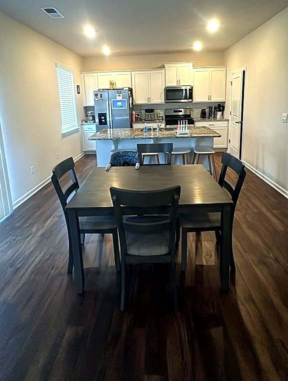
Move-out cleaningA complete room-by-room move-out cleaning checklist for renters in Greer, SC. See what landlords inspect, common deposit deductions and when to book professional move-out cleaning.
Deep cleaning vs. regular house cleaning explained: what each includes, how long they take, how often to book and how to choose the right service for your Greer, SC home.
Based in Greer, SC 29651, we clean homes and businesses across the Upstate. Don’t see your town? Text us and we’ll let you know.
Answers about prices, deep cleaning, maid service and the areas we serve. Still have a question? Text (864) 666-8520.
Get my free estimateThe price of house cleaning in Greer depends on the size of your home, the number of bedrooms and bathrooms, the type of cleaning and how often you book. Send our free estimate form Book a free in-home estimate: we visit, see the space and give you an exact price, with no commitment.
A deep cleaning includes everything in a regular house cleaning plus baseboards, door frames, light switches, cabinet fronts, grout, vents, ceiling fan blades, window sills, blinds and the areas behind and around toilets and appliances.
Brazilian house cleaning is a hands-on, detail-first cleaning method. Instead of only cleaning what you see, every surface is wiped by hand, including corners, edges and baseboards most cleaning services skip. Read more on our blog.
Yes. Our move-in and move-out cleaning covers inside cabinets, closets, the refrigerator and the oven, so the home is ready for the final walkthrough. See our move-out cleaning checklist.
Yes. We remove fine construction dust, debris and residue from floors, windows, cabinets and fixtures after a build or remodel so you can move in right away.
Yes. You can book recurring maid service weekly, every two weeks or monthly, or schedule a one-time cleaning.
No. Our cleaning team brings the products and equipment. If you prefer a specific product in your home, just let us know.
No. Many clients leave a key or door code. We confirm the arrival time with you before every visit.
We clean homes and businesses in Greer (29650, 29651), Taylors, Greenville, Spartanburg, Simpsonville, Duncan, Lyman, Travelers Rest and surrounding Upstate South Carolina.
Yes. We provide commercial and office cleaning in Greer and Greenville for offices, stores and small businesses, on a schedule that works around your hours.
Every home is different, so the exact price comes after a free walkthrough at your home, with no commitment. Schedule a free estimate visit and you get an exact price after we see the home, with no commitment.
It depends on the size of the home and the type of cleaning. A deep cleaning takes longer than a regular visit. We tell you the expected time together with your price.
Free estimate, no commitment. We visit your home and give you an exact price, with no commitment.